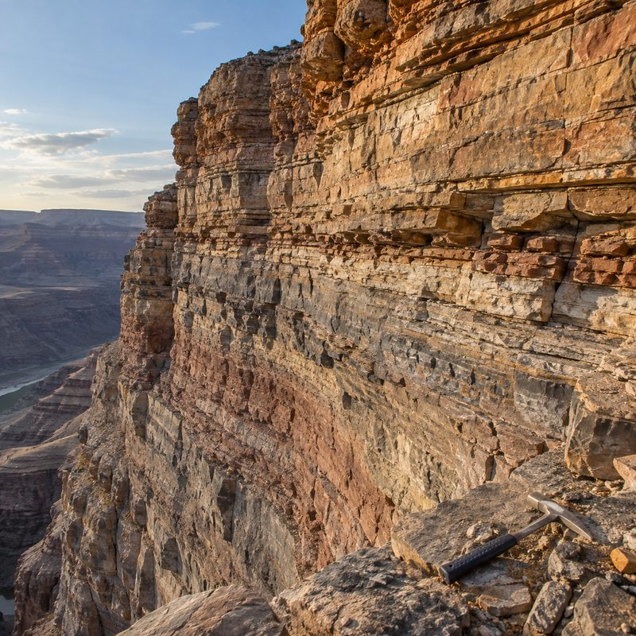
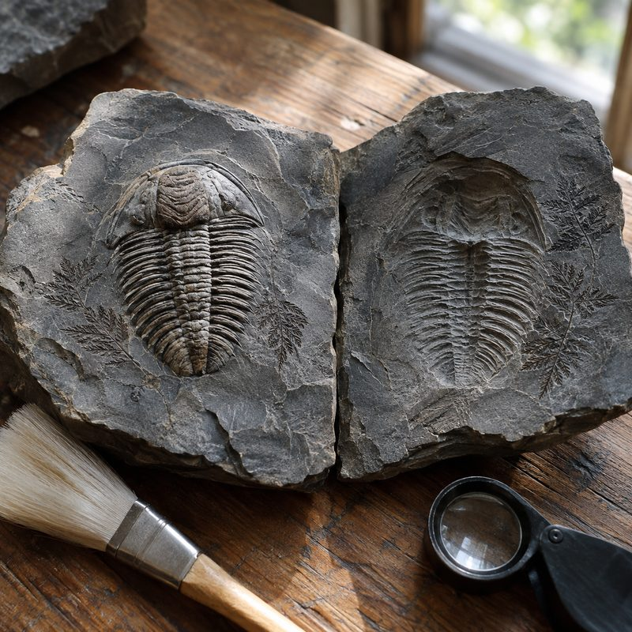
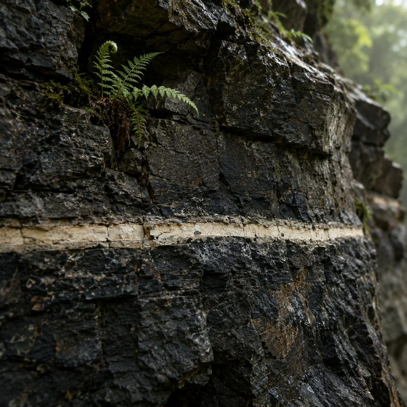

Get a Grip on the Geologic Time Scale
jee-uh-LOJ-ikThis cliff is 539 million years deep and it is full of bones. Grab your trowel and brush up on every layer. Tap any layer to go there: how it started, who lived in it (dig them up, four to thirteen a layer), and how it all went wrong. The thin red stripes are the five times nearly everything died. Deeper is older. Mind the extinctions.
The Earth kept a diary. Nobody was supposed to read it.

Rocks are the pages.Mud falls on mud for a million years and hardens. Every layer is a page. The bottom page is the oldest, and it is very far down.
Fossils are the words.Trilobites only ever turn up in the low pages, mammoths only in the top ones. Learn the order and a single bone tells you when its owner was alive, and what was trying to eat it.
It shows what happened last time.Ice ages, hothouse ages, oceans that ran out of air, a rock from space. Five times nearly everything died. Every time, life came back wearing something different.Living fossils. They were here first, and they are still here.
Charles Darwin made up the name in 1859 for living things that look almost exactly like their own fossils from deep in the cliff. They have sat through ice ages, hothouse ages, a sea with no air in it and a rock from space, and they look much as they did when they started. Two different puzzles hide in that sentence. Why did the family survive? Each one has its own answer, and it is usually about where it lived, not how tough it was. Why does it still look the same? Because the shape kept working, while the animal underneath went on quietly evolving. Tap a line to meet one.